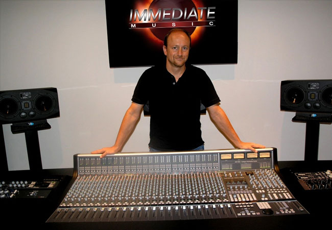
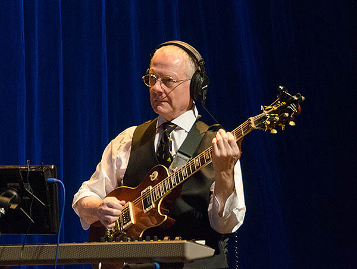

Yoav Goren (Hebrew: יואב גורן) is an Israeli-American musician, composer, and record producer specializing in soundtracks and trailer music for films and television series.[1]
He was one of the founders of Immediate Music, 1 Revolution Music, and Imperativa Records.
Born in Israel, Goren was raised in New York City by an artistic family that encouraged him to study piano at a young age.
He was influenced initially by classical composers, then by the Beatles and by film composers Ennio Morricone, Jerry Goldsmith, and John Barry.
He began composing while studying at New York University, where he graduated with a degree in Film & Television Production.
After touring with several bands in the US as a keyboardist, Goren settled in Los Angeles, California, where he met and collaborated with Leonard Cohen on the critically acclaimed[6]
album The Future (1992) as arranger and co-producer.
In 1993, Goren co-founded Immediate Music with fellow composer Jeffrey Fayman. From his first trailer score for Carlito’s Way in 1993 to campaigns for films
such as Star Wars, Captain Marvel, Wonder Woman, Avengers, X-Men, Amazing Spider-Man, and the complete Harry Potter series, Goren and Immediate
Music have provided music to motion picture studios through both custom scoring and the Immediate Music production music library. W
ith over 6,000 trailer score placements to date, the team of Goren and Fayman are among the world's most frequently utilized composers in the motion picture advertising industry.
[10] Building upon the success of Immediate Music, Goren collaborated again with Fayman in 2010 to co-found the company 1 Revolution Music,
which produced a production music catalog for licensed use in television programming and other media. Both Immediate Music and 1 Revolution Music were acquired by BMG Rights Management in 2017.
In 2006 Goren launched Imperativa Records, a commercial record label specializing in the music genre known as Epic Music. Notable artists and releases include Globus Music and the Trailerhead series.
Goren received an Emmy Award in 2007 for ‘Outstanding Music Composition in a Sports Program’, and a BMI Award in 2008,
for his contribution to "The XX Olympic Winter Games: The Stories of Torino" during NBC's XX Olympic Winter Games broadcast.
Goren was also tapped by Telemundo Deportes to compose the official theme song of Telemundo's 2018 FIFA WORLD CUP™ BROADCAST.

Lisbeth Scott
Lisbeth Scott (born 1 January 1978) is an American composer, vocalist, multi-instrumentalist, producer and songwriter of Armenian origin, born in Boston, Massachusetts.
She is featured on the soundtracks for the films Avatar, Avatar: The Way of Water, Concussion, Shrek, The Passion Of The Christ, Transformers,
The Big Wedding (co-wrote "Wonderful Life" with Nathan Barr), The Chronicles of Narnia: The Lion, the Witch, and the Wardrobe,
The Chronicles of Narnia: Prince Caspian and Munich, in which she sings a 3 minute solo specifically written for her by John Williams.
In addition she is featured in Iron Man 2, Disney's Wings of Life, Spider-Man and many more. She co-wrote and performed the songs "Where", and "One Breath" for Narnia.
She also co-wrote and performed "Good To Me" in the movie Shutter, "Edge of Heaven" with Joel Douek for the film The Wildest Dream,
"Real Love" (for Macy Grey) for the film Domino (with Harry Gregson Williams) and countless others.
Her songs and vocals have been featured in hundreds of Hollywood blockbusters, many of them Oscar and Grammy winners and nominees. As a composer she has scored both television and film.
Jeffrey Fayman
In 1977, Fayman drummed in Peter Banks' Empire band, the sessions appearing on the archival Mark II release in 1997.
Fayman has collaborated with King Crimson's Robert Fripp on various occasions, starting with the 2000 album A Temple In The Clouds,.[1] Following that release,
Fripp performed as a guest on the Steve Roach & Jeffrey Fayman release Trance Spirits (2002).
A later collaboration between Fayman and Fripp was The Human Experimente, re-interpreting early King Crimson music.
A single of "21st Century Schizoid Man" was released in 2009 and work was reportedly ongoing on an album, also with Billy Sherwood.
Fayman works for Immediate Music and is a member of Globus with Yoav Goren.
Anneke Van Giersbergen
Van Giersbergen was born in the small town of Sint-Michielsgestel, Netherlands. She began singing at age 7, when she participated in a music contest.
At 12 years old she participated in her school choir where she studied and toured through France. Later, she took singing lessons and joined several bands.
In 1992, she founded the duo "Bad Breath" with guitarist and singer Deniz Cagdas (Spencer Edgards), with music predominantly based on blues, jazz, folk and funk.
She joined The Gathering in 1994, and is best known for her work with them.
The Gathering and several collaborations (1995–2006)
In 1998, she sang on the Ayreon album Into the Electric Castle, a concept album telling the tale of an alien entity 'kidnapping' eight human souls from different times.
Van Giersbergen portrayed an Egyptian woman from the time of the pharaohs.
In 2006, she appeared on the album 2006 Rubicon from Asia band members' John Wetton and Geoffrey Downes on the tracks "To Catch a Thief" and "Tears of Joy".
She also appears on the Smear Campaign by the grindcore-death metal band Napalm Death, on the tracks "Weltschmerz" and "In Deference", contributing spoken rather than sung vocals "for good effect and relevance to the track"
In June 2006, the epic rock band Globus released the album Epicon, which included Van Giersbergen's vocal and writing contributions.
Van Giersbergen co-wrote the lyrics for "Mighty Rivers Run", and sang lead vocal on the track as well as dueting with Christine Navarro on the seminal "Diem Ex Dei".
Robert Fripp
Robert Fripp (born 16 May 1946) is an English musician, songwriter, record producer, and author, best known as the guitarist, founder and longest-lasting member of the progressive rock band King Crimson.
He has worked extensively as a session musician and collaborator, notably with David Bowie, Blondie, Brian Eno, Peter Gabriel, Daryl Hall, The Roches, Talking Heads, and David Sylvian.
He also composed the startup sound of Windows Vista operating system, in collaboration with Tucker Martine and Steve Ball.
His discography includes contributions to over 700 official releases.
His compositions often feature unusual asymmetric rhythms, influenced by classical and folk traditions.
His innovations include a tape delay system known as Frippertronics and new standard tuning.
Early life
Robert Fripp was born in Wimborne Minster, Dorset, England,the second child of a working-class family. His mother Edith (née Greene; 1914–1993) was from a Welsh mining family; Fripp considers himself to be half Welsh.
Her earnings from working at the Bournemouth Records Office allowed his father, Arthur Henry Fripp (1910-1985) to start a business as an estate agent. In 1957, at age eleven,
Fripp received a guitar for Christmas from his parents and recalled, "Almost immediately I knew that this guitar was going to be my life".
He then took guitar lessons from Kathleen Gartell and Don Strike; at age 11, Elvis Presley's guitarist Scotty Moore inspired Fripp to play rock, moving on to traditional jazz at 13 and modern jazz at 15.
He cited jazz musicians Charlie Parker and Charles Mingus as his musical influences during this time.
In 1961, the fifteen-year-old Fripp joined his first band, The Ravens, which also included Gordon Haskell on bass.
After they split in the following year, Fripp concentrated on his O-level studies and joined his father's firm as a junior negotiator. At this point, he intended to study estate management and,
eventually, take over his father's business. However, at seventeen, Fripp decided to become a professional musician. He became the guitarist in the jazz outfit The Douglas Ward Trio, playing in the Chewton Glen Hotel of New Milton,
followed by a stint in the rock and roll band The League of Gentlemen which included two former Ravens members.
In 1965, Fripp left the group to attend Bournemouth College, where he studied economics, economic history, and political history for his A-levels.
In February 1965, Fripp went to see the Duke Ellington Orchestra, an experience which moved him deeply.
He subsequently spent three further years playing light jazz in the Majestic Dance Orchestra at Bournemouth's Majestic Hotel (replacing future The Police guitarist Andy Summers, who had gone off to London with Zoot Money).
It was during this time when he met musicians that he would collaborate with in his career: John Wetton, Richard Palmer-James, and Greg Lake.
At age 21, going back home from college late at night, Fripp tuned on to Radio Luxemburg where he heard the last moments of "A Day in the Life".
"Galvanized" by the experience, he went on to listen to Sgt. Pepper's Lonely Hearts Club Band, Béla Bartók's string quartets, Antonín Dvořák's New World Symphony, Jimi Hendrix's
Are You Experienced and John Mayall & the Bluesbreakers.Many years later, Fripp would recall that "although all the dialects are different, the voice was the same... I knew I couldn't say no".

Mark Richardson
Mark Richardson (born 18 May 1970, Leeds) is an English drummer,
known for being a member of the English rock group Skunk Anansie and formerly of Little Angels and Feeder.
Music
In 1991 he moved to London to join Little Angels after Michael Lee left to join The Cult.
Matt Sorum had left The Cult to join Guns and Roses after their drummer, Stephen Adler, had allegedly been kicked out due to his growing drug habit.
Richardson's first ever professional engagement was with the Little Angels on the 'Jim'll Fix It' show, a kids prime time TV show that helped children fulfil their dreams.
Hailing from Scarborough, Little Angels were tipped for success and in 1992 wrote and recorded Jam, the band's third record on Polydor. It entered the UK album charts at number one.
Despite touring extensively in Europe, stadium supports slots with Bryan